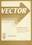
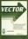

Volume 5, 1988–1989  N°1, July 1988 N°2, November 1988 N°3, January 1989 N°4, April 1989 N°1, July 1988¶ Page Article Author 3 EDITORIAL: Adrian Smith APL NEWS 4 Topics for Future Meetings Jonathan Martin 5 Quick Reference Diary Adrian Smith 6 APL-ication: Latest Details Philip Goacher 11 General Correspondence 11 Re: letters published in VECTOR 4.2 Mark Cranny 14 Public Letter to P Chapman F.H.D. van Batenburg British APL Association News 19 Report on the 1987/88 year Graham Parkhouse 21 Accounts and Minutes of the 1988 AGM 26 APL Bibliography David Eastwood 28 News from Sustaining Members Cathy Dargue 33 The Education VECTOR Norman Thomson 34 Survey of Attitudes to APL David Eastwood REVIEWS 39 APL Product Guide Cathy Dargue 49 Lauer Software's APL2C Romilly Cocking 56 Algorithmics by Harel Anthony Camacho 59 RECENT MEETINGS: 60 Through IRMA to IMS David Alis 64 Real-time Processes in a Brewery Robert Poate 65 BAA Technical Meeting, 25th March 1988 at the Royal Over-Seas League Adrian Smith 66 Developing Business Systems Romilly Cocking 68 APL in a Large Organisation Maurice Jordan 70 Fast PC to MF File Transfer David Toop GENERAL ARTICLES 78 A Commentary on APL Development ⚠ Ken Iverson 85 Simple Icon Design for EGA and VGA Adrian Smith 91 AP727: APL*PLUS to DB2 Allan Gay TECHNICAL SECTION: INTERFACES 102 Hacker's Corner: a little bit of C Adrian Smith 103 Technical Correspondence (PDF) 103 Duplicate rows idiom Peter Branson 104 VSAM Processing in APL John Sullivan 119 APL*PLUS/PC to Oracle on Vaxes Adrian Smith 133 APL through Mac Windows Richard Nabavi British APL Association Software Library 140 Software Submission Details (PDF) David Ziemann 142 Software Order Form (PDF) David Ziemann ⚠ The transcription is doubtful or missing; its page says why. PDF of the whole issue N°2, November 1988¶ Page Article Author 3 EDITORIAL: Adrian Smith APL NEWS 5 Quick Reference Diary Adrian Smith 7 General Correspondence 7 APL Conference on CIX Craig Lomas 8 I-APL and the APL Keyboard Anthony Camacho British APL Association News 15 Committee Activities Graham Parkhouse 17 The Education VECTOR Alan Sykes 18 Report on the 1988 Summer Course John Clift 20 APL at Mill Hill School Bruce Dickson 20 A Pilot Course in APL Bruce Dickson 23 The Latest on I-APL Anthony Camacho 27 Counting in APL Alan Sykes 33 News from Sustaining Members Cathy Dargue REVIEWS 36 APL Product Guide Cathy Dargue 46 New Product Announcements Product Reviews 47 APL as a Tool of Thought(V) Derek Wilson 48 Ziemann: Selected musings at the VECTOR Working Group David Ziemann 49 Statgraphics Gavin Schwarzenbach 54 APL Booklist(Renaissance Data Systems) (PDF) Ed Shaw 55 RECENT MEETINGS: 56 Syracuse Meeting on APL in AI John Adams APL-ication Report ... 61 Conference Highlights Adrian Smith 62 Notes on Given Papers Adrian Smith 71 Panel: the APL Market Niche Donnelly et al 74 APL*PLUS II James Wheeler 76 IBM's APL2/PC Adrian Smith 77 Computers in the Boardroom David Preedy 79 TECHNICAL SECTION 82 Prize Caption Competition 83 Hackers Corner: the TSO session Adrian Smith 85 Technical Correspondence (PDF) Sullivan, Hayward 85 Security? What Security? John Sullivan 86 Sharing GDDM pages between APL2 and Fortran J. Sullivan 86 Gizz a Font Iain Hayward 88 The Limits of Forward Chaining Allan Prys-Williams 105 Missembling Allan Gay British APL Association Software Library 121 Short Catalogue David Ziemann 124 Software Submission Details (PDF) David Ziemann 126 Software Order Form (PDF) David Ziemann PDF of the whole issue N°3, January 1989¶ Page Article Author 3 Guest Editorial: David Preedy APL NEWS 7 Quick Reference Diary 9 APL Training Courses 10 General Correspondence 10 The State of the APL Association Anthony Camacho 13 News from Sustaining Members Cathy Dargue 17 The Education VECTOR Alan Sykes 19 Puzzle Corner Alan Sykes 19 Humble-pie Corner 20 Report on the Promotion of I-APL at ICME-6 Budapest 27th July - 3rd August 1988 Neil Bibby and John Durran 22 I-APL News Anthony Camacho 26 Counting in APL - Part Two Alan Sykes 33 British APL Association News Graham Parkhouse 35 1989 Design Award to Metapraxis David Preedy 36 APL People: Survey Results Jill Moss REVIEWS 39 APL Product Guide Cathy Dargue 40 New Product Announcements 41 Product Catalogue 50 APL Booklist (PDF) Ed Shaw Book Reviews ... 51 APL is Easy!/APL2 at a Glance Bill Ross 55 RECENT MEETINGS 56 Nov 18th: APL at the Leading Edge 57 Expert Systems with Existing Software Allan Prys Williams 75 Integrated Information: APL and SQL Brian Lochran 79 January 13th: Function-point Analysis 79 Introduction to FPA Romilly Cocking 80 FPA in IBM Alan Williams 83 Case Study at British Airways Maurice Jordan 84 February 17th: APL: Future Plans Adrian Smith 87 GENERAL ARTICLES 88 Assurance Quotations Harry Phillips 91 Case Study: How Expensive is APL? F.H.D van Batenburg 103 Generic Local Objects Zdenek Jizba TECHNICAL SECTION 108 Technical Editorial: Jonathan Barman 110 Technical Correspondence (PDF) 110 Font for APL.68000 Iain Hayward 112 Hackers Corner: An Undocumented AP John Sullivan 116 A Good Character Scatterplot Alan Sykes British APL Association Software Library 124 Software Submission Details (PDF) David Ziemann 126 Software Order Form (PDF) David Ziemann PDF of the whole issue N°4, April 1989¶ Page Article Author 3 EDITORIAL: In which Piglet meets a Heffalump Adrian Smith APL NEWS 7 Quick Reference Diary 9 APL Course Diary 10 General Correspondence 10 Printer Support from QL-APL Alan Angus 11 APL in Statistics Conference Alan Sykes 12 APL89 and APL90 Information 17 A Guide to Conference Going John Searle 19 British APL Association News (PDF) Graham Parkhouse 19 AGM and Election Results 22 Incoming Committee Statements 24 News from Sustaining Members Alison Chatterton 27 The Education VECTOR Alan Sykes 29 Puzzle/Problem Corner Alan Sykes 30 Letter: 3 million PCs for the Soviet Union Dave Piper 30 Letter: I-APL keyboard and beginners Les May 31 I-APL News: The State of the Project Anthony Camacho 34 Understanding Randomness Using APL Alan Sykes REVIEWS 43 APL Product Guide Alison Chatterton 54 2nd Generation APLs on Micros ... Adrian Smith 53 Books Received for Review 53 IBM Personal Computing in Schools Anthony Camacho 55 APL*Plus II (technical) Peter Cyriax 61 APL*Plus II (applications) Ajay Askoolum 67 SAX Michael Berry 77 RECENT MEETINGS APL: the Future Directions 78 Dyadic Systems Peter Donnelly 82 APL2 on the IBM PC David Selby GENERAL ARTICLES 86 Standardised Test Scores Jerry Brennan 93 TECHNICAL SECTION Prize Competition Results 94 Caption Competition David Ziemann 95 Hackers Corner (DOS envt variables) Adrian Smith 96 Technical Correspondence (PDF) 96 An IBM Bug to watch for, when moving to APL2 John Warden 96 An Ambivalent Operator David Piper 97 Setting PF keys and Other Initialization Nicholas Small 99 Logic in APL Joseph L.F. de Kerf 113 Parallel Computing and APL David Piper British APL Association Software Library 123 New Entries Alison Chatterton 126 Provisional Contents of VECTOR 6.1 127 Index to Advertisers (PDF) PDF of the whole issue